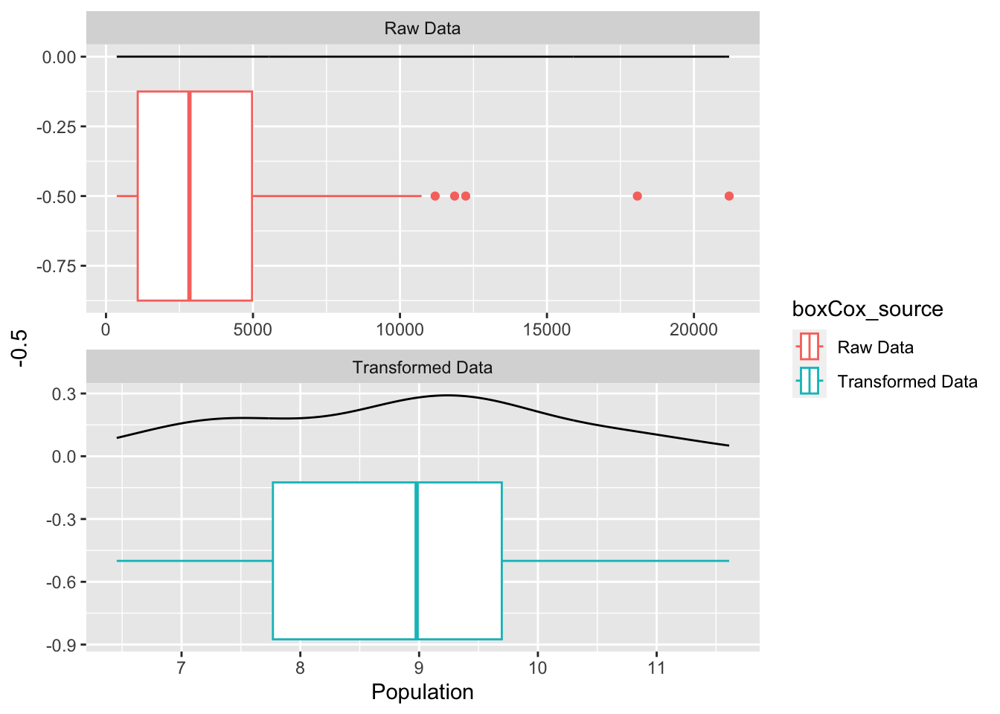
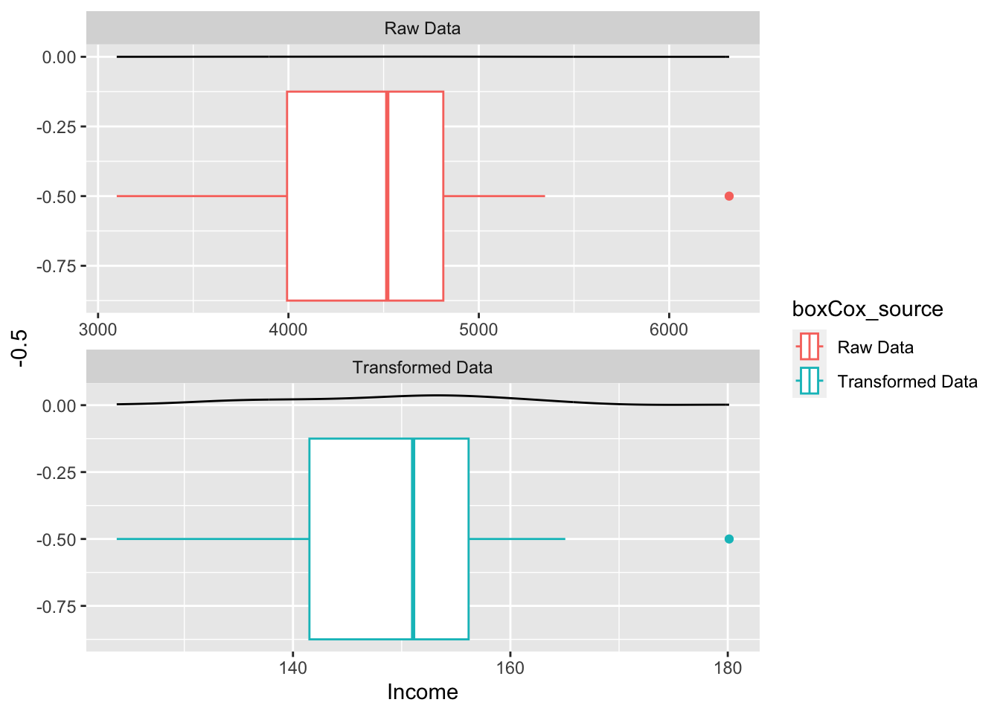
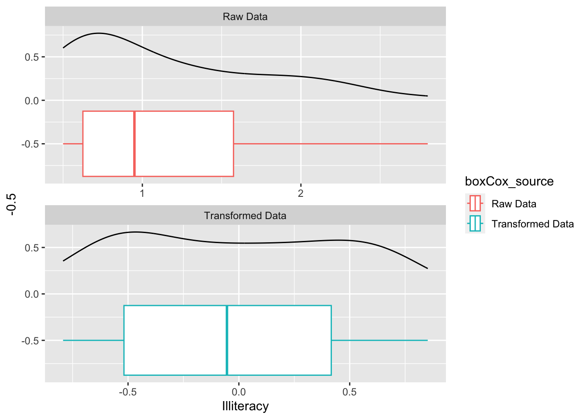
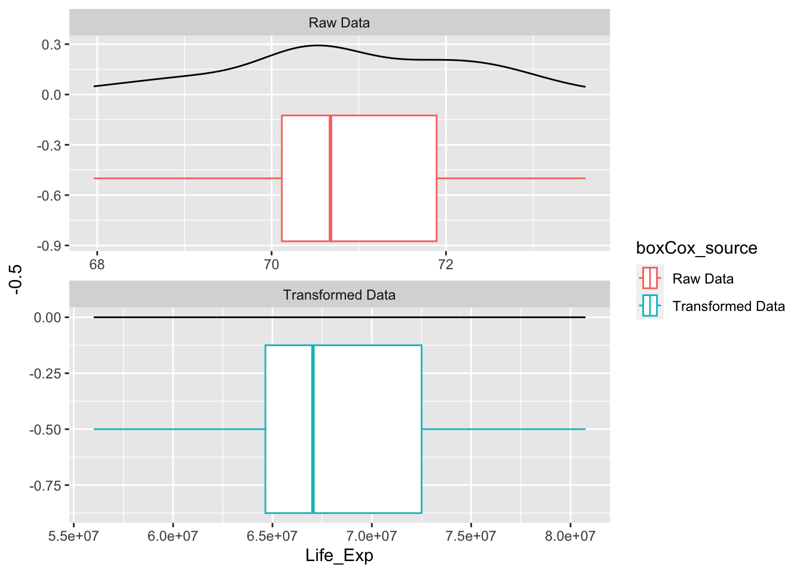
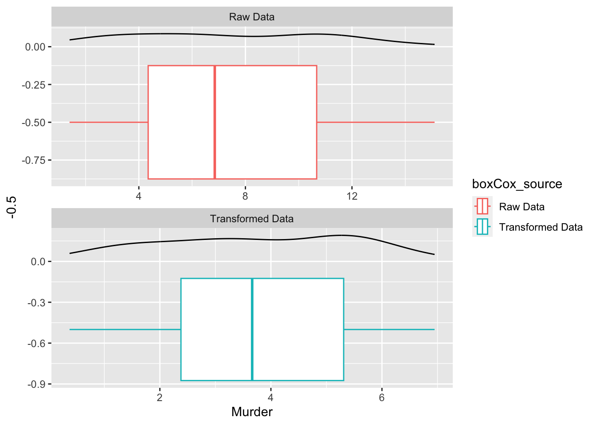
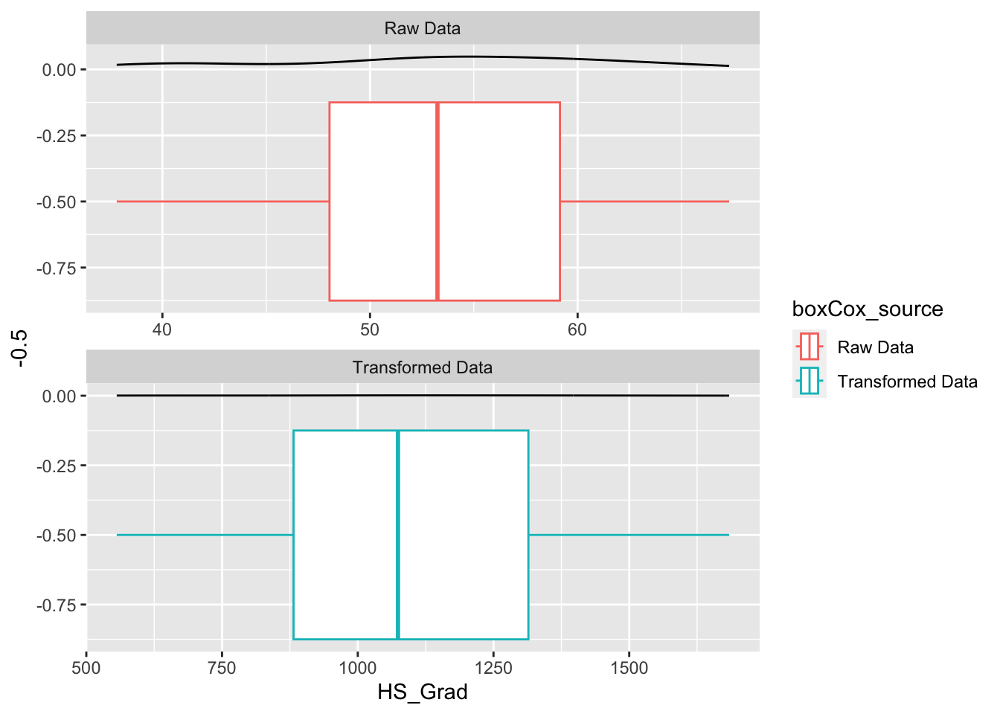
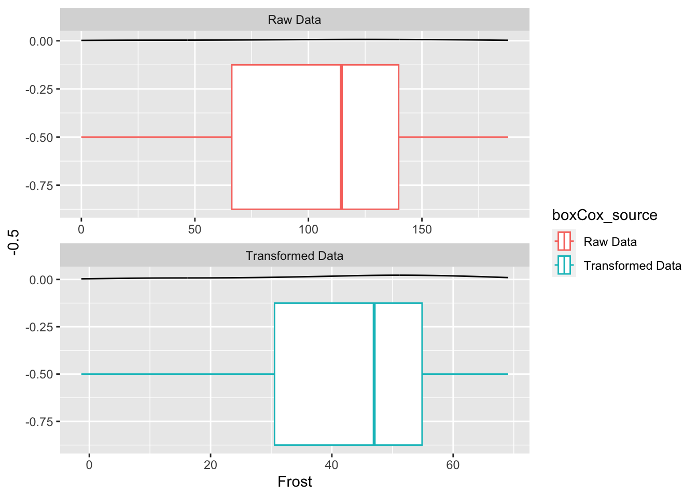
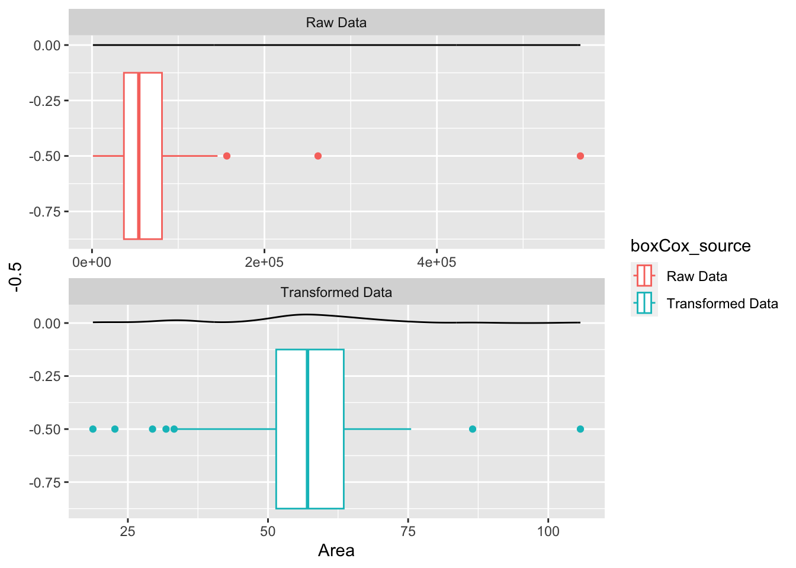

R’s console based interface makes it a great tool for interactively exploring small data sets. Packages like tidyverse and DescTools contain well-thought-out functions for wrangling, summarizing, and visualizing data. Applying these same tools to large datasets, however, can result in a tedious exploratory data analysis (EDA). A lot of time can be spent tweaking throw away code in search of possible relationships and potential issues within a given dataset. The goal of EDAmigo was to create a package that pairs well with existing tools and helps the user interactively review their data. Changes made to the data using EDAmigo functions are stored in user friendly formats.
My focus for the EDAmigo package was on transformations for numeric data. Numeric transformations can be helpful for addressing non-normality, skewness, and outliers in data that can be problematic downstream in the modeling process. Box-Cox methods have been implemented in various R packages such as DescTools, EnvStats, MASS, and tidymodels. My implementation (EDAmigo::boxCox) differs from these in that it aims to ease the EDA process by computing the Box Cox transformations for each of the specified columns in a matrix or dataframe at the same time. The function uses the two-parameter Box-Cox transformation to account for any numeric columns that have either negative values or 0s and the function also outputs asymptotically constructed confidence intervals for the power transformation parameter lambda_1 so users can easily select a simpler alternative power if they choose to. Normality is tested for both the raw and transformed data using the Anderson-Darling method. Additionally, I implemented a function that visualizes the data transformations and either presents 1 chart at a time to the user with prompts to advance to the next chart or stores the output in a list.
For this demo we are going to use the state.x77 data from the datasets package which has 1 row for each state and 8 columns with state specific metrics.
Load the EDAmigo package and State data:
library(EDAmigo)
state_data = as.data.frame(state.x77)
names(state_data) = c("Population", "Income", "Illiteracy", "Life_Exp", "Murder", "HS_Grad", "Frost", "Area")Compute potential transformations:
The default setting in the boxCox function is to filter out transformations that do not improve normality or reduce outliers. We will be setting filter to FALSE to compare the results to some of the other package implementations.
EDAmigo_results_1 = boxCox(state_data, lambda = seq(-5,5,0.01), FILTER = FALSE)## Warning in boxCox(state_data, lambda = seq(-5, 5, 0.01), FILTER = FALSE): One or
## more of the variables did not converge in the specified lambda_1 rangeEDAmigo_results_1$boxCox_Results %>% DT::datatable() %>% DT::formatRound(columns = 3:10, digits=3)The warning that appears tells us that one or more of the variables did not converge in the specified lambda_1 range. In this case, it’s the Life Exp variable. If the FILTER is set to TRUE, then it will be filtered out of the results. The tidymodels package has the step_BoxCox function which works really well for applying box cox transformations to a set of predictors as part of the modeling workflow. It is a little trickier to work with if the user just wants to review multiple transformations to determine if they work well with the data. Let’s compare the results of the boxCox function from the EDAmigo package against results of the step_BoxCox function:
# Load Library
library(tidymodels)
# Create Recipe
rec <- recipe(~., data = state_data)
## Use the step_BoxCox function to determine transformations
bc_trans <- step_BoxCox(rec, all_numeric(), limits = c(-3,3))
## Prep the data
bc_estimates <- prep(bc_trans, training = state_data)## Warning: Non-positive values in selected variable.## Warning: No Box-Cox transformation could be estimated for: `Life_Exp`, `Frost`## Extraxt the results
bc_data <- bake(bc_estimates, state_data)
## Tidy the Results
(tidymodel_est = tidy(bc_estimates, number = 1))## # A tibble: 6 × 3
## terms value id
## <chr> <dbl> <chr>
## 1 Population 0.0347 BoxCox_9YJAe
## 2 Income 0.524 BoxCox_9YJAe
## 3 Illiteracy -0.379 BoxCox_9YJAe
## 4 Murder 0.606 BoxCox_9YJAe
## 5 HS_Grad 1.92 BoxCox_9YJAe
## 6 Area 0.250 BoxCox_9YJAeThe step_BoxCox returns 6 box-cox transformations. The function uses a 1 parameter transformation and was unable to find a transformation for the Frost data since it contained 0s. The EDAmigo handled this by using a shift parameter of 0.001. Similar to the EDAmigo implementation, the tidymodels implementation was unable to find a solution for the Life Exp variable in the default lambda range. The 6 transformations returned are nearly identical to those reported by the EDAmigo package and the differences are due variations in the implementation approaches.
Select desirable transformations:
Suppose that we want to determine which transformations will help improve normality and reduce outliers. The tidymodels output has all of the lambda values but it doesn’t indicate which ones offer improvements. The output can be plotted to compare the distributions of the raw and transformed data but this has to be done one variable at a time. EDAmigo has features that help with this process. One such feature is the filter option which filters out transformations that don’t result in improved normality and reduce the number of outliers. The filter option also sorts the results to indicate which transformations have the best results.
EDAmigo_results_2 = boxCox(state_data, lambda = seq(-5,5,0.01), FILTER = TRUE)## Warning in boxCox(state_data, lambda = seq(-5, 5, 0.01), FILTER = TRUE): One or
## more of the variables did not converge in the specified lambda_1 rangeEDAmigo_results_2$boxCox_Results %>% DT::datatable() %>% DT::formatRound(columns = 3:10, digits=3)The previous warning from the life expectancy variable still appears so the user knows that one or more of the filtered out values are not converging. The results now only have 4 transformations. The box plots for all of the transformations can be generated at the same time using the boxCox_Vis function. Doing this below, we can see that the only four transformations kept are those that have both improved normality and reduced outliers.
box_plots = boxCox_Vis(state_data, EDAmigo_results_1, interactive_view = FALSE)box_plots[[1]]
box_plots[[2]]
box_plots[[3]]
box_plots[[4]]
box_plots[[5]]
box_plots[[6]]
box_plots[[7]]
box_plots[[8]]